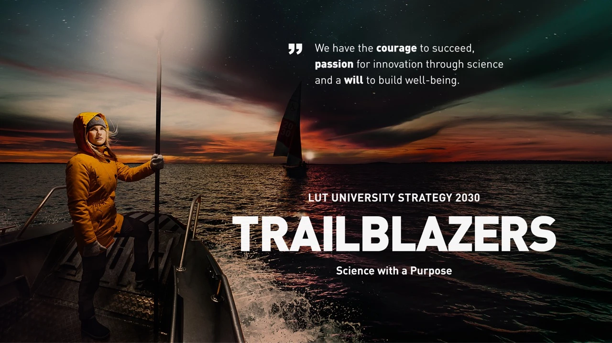
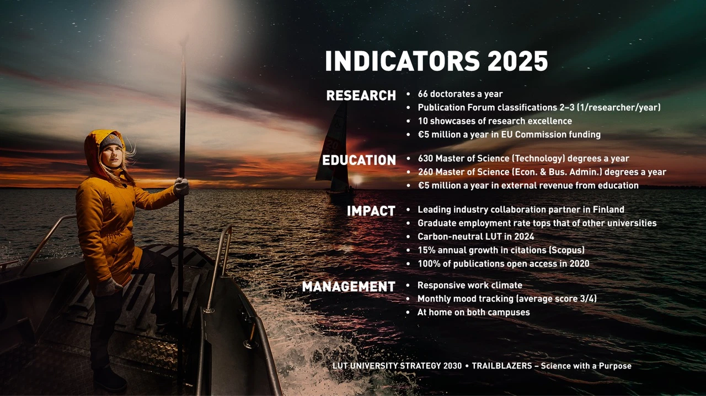

CT10A9900 学习导论 DD Studies · 课程合订本
1 门课 / 2 章 / 4 讲，按「课程 → 章节」顺序连排；每章有标题，每讲之后可直接跳回独立页或章节页。适合通读、打印、离线放到手机里看。
CT10A9900 学习导论 DD Studies
双学位软件与系统工程的第一门导论课：讲清院系与学位阶梯、职业路径、AI 使用与声明规则、四个必做作业（信息检索、PSP、CV、学术伦理），并用团队协作、自我管理与学习能力把三年默认课表落到可执行的计划上。 · 2 章 · 4 讲
第 1 章 学习环境与团队协作 2 讲 章节页 →
第 1 讲 · 软件工程系、学习环境与课程要求
Software Engineering at LUT, Study Environment and Course Requirements 第 1 章 学习环境与团队协作
本讲定位
CT10A9900 是双学位（Double Degree）软件与系统工程专业的第一门“学习导论”。它不讲编程，而是把接下来三年要用的东西一次交代清楚：你所在的院系与学位阶梯、毕业后的岗位地图、必须遵守的 AI 规则、四个必做作业，以及遇到问题时该找谁。
课件把内容分成四块：LUT 的软件工程、软件工程的职业路径、借助个人学习计划（PSP）按时完成学业、课程本身说明。本讲处理第一、二块与课程要求，团队协作、学位结构与 PSP、CV 作业分别放在第 2–4 讲，四讲合起来覆盖整门课。
学完本讲你应当能够：
- 说清软件工程系的两个校区与学士—硕士—博士三段学位阶梯的年限与学分
- 把课件列出的岗位按“开发与架构 / 产品与支持 / 领导与其他”三类归档
- 区分产品公司与咨询公司，并判断一个岗位属于哪一类
- 在 Sisu 中查一门课的先修要求，并据此判断本学期能否报名
- 按 LUT 要求写出合规的 Declaration of AI usage（AI 使用声明）
一、这门课是什么
课程全名是 Introduction to DD Studies in Software and Systems Engineering（双学位软件与系统工程学习导论），2025 年 9 月 1 日至 2026 年 4 月 17 日在 Lahti 校区面授。课件署名 Katja Karhu（Junior Researcher）与 Maria Paasivaara（Professor），标注日期 02.09.2025。
课程页给出的四个内容块是：Software Engineering at LUTCareer Paths in Software EngineeringCompleting your studies in schedule with the help of personal study plan (PSP)About the course。这不是随手排的顺序：先知道自己在哪个组织里读书，再知道读完之后去哪里工作，然后才知道这三年怎么排课，最后才是这门课怎么考。
二、软件工程系与两个校区
软件工程系（Department of Software Engineering）成立于 2020 年，在 Lappeenranta 与 Lahti 两个校区同时运作。课件用两张城市地图把两地并列，说明同一个系跨校区组织教学与研究。
对你的实际影响很具体：课程、辅导（tutoring）、自习空间与实习机会可能分布在两个城市；看课表时必须同时确认城市、教室、时间三件事，而不是只看课程代码。第 6 讲的数字导览会说明，上课地点只在 Time-Edit 里给出，这正是一个跨校区院系必须依赖排课系统的原因。
三、学位阶梯：学士 → 硕士 → 博士
学士（Bachelor）之后是本专业方向的硕士项目（Master’s programmes in software engineering）；硕士之后是博士阶段。LUT 的博士教育由 LUT Doctoral School（LUT DS）统筹：它由学校的博士项目组成、在校级运作，在博士项目之间传播良好实践，并对博士教育提出建议。
课件给出的三个硬数字要记住：博士学位约需 3–4 年全日制学习；licentiate（副博士学位）通常 2 年全日制；博士阶段的学习范围为 30 ECTS cr。LUT 的博士学位按具体研究领域（research fields）规划与组织，不是按课程清单堆出来的。
| 阶段 | 英文 | 年限 / 学分（课件原文） |
|---|---|---|
| 学士 | Bachelor’s degree | 项目按三年毕业设计（见第八节） |
| 硕士 | Master’s programmes in software engineering | 学士之后的下一段，具体项目见学位结构 |
| 副博士 | Licentiate degree | 通常 2 年全日制 |
| 博士 | Doctoral degree | 约 3–4 年全日制；博士阶段学习 30 ECTS cr |
四、职业路径：一张岗位地图
4.1 开发与架构
软件开发的岗位包括 software developer / designer、DevOps engineer、software tester、test automation developer / architect、UX designer。架构方向包括 solution architect、enterprise architect、technical architect 等。课件用「Etc…」明确表示这只是示例，不是完整清单。
4.2 产品管理与支持性职能
产品管理方向有 product owner、product designer、service designer；支持性活动（supporting activities）包括 information security、IT infrastructure、IT support、IT compliance、operations、sales。注意 sales 被归在支持性活动里——软件公司的销售卖的是技术方案，需要读得懂产品与架构。
4.3 领导与其他
领导方向是 team leader 与各类 managerial roles，另加 business development；其他方向包括 AI specialist、data scientist、agile coach / Scrum master、researcher、university teacher、entrepreneurship。课件的结语是：“Your bachelor’s degree can be a basis for a multitude of different career paths”——学士学位是多种职业路径的共同基础，而不是一条单行道。
| 类别 | 课件列出的岗位 | 共同能力 |
|---|---|---|
| 开发与架构 | developer / designer、DevOps、tester、test automation、UX；solution / enterprise / technical architect | 写代码、读代码、系统分解 |
| 产品与支持 | product owner、product designer、service designer；information security、IT infrastructure、IT support、IT compliance、operations、sales | 理解需求、跨团队沟通 |
| 领导与其他 | team leader、managerial roles、business development；AI specialist、data scientist、agile coach、researcher、teacher、entrepreneur | 组织协作、领域专精 |
五、产品公司还是咨询公司
课件把软件公司分成两类：产品公司（product companies）开发并销售自己的软件产品；咨询公司（consulting companies）向其他公司提供软件顾问（开发者、测试者等）或承接软件项目。第三类容易被忽略：许多“传统”企业与组织内部也有 IT 与软件工程岗位。
三类雇主的差别不在技术栈，而在你每天面对的对象：产品公司面对自己产品的用户与长期演进；咨询公司面对客户的需求、合同与交付期限；传统企业的 IT 部门面对内部业务流程与遗留系统。
| 维度 | 产品公司 | 咨询公司 | 传统企业的 IT / SE 岗 |
|---|---|---|---|
| 你做的对象 | 自家产品的一个模块或一条产品线 | 客户项目，按合同交付 | 内部系统与业务流程 |
| 节奏来源 | 产品路线图与版本发布 | 客户排期与验收节点 | 业务需求与合规要求 |
| 能力侧重 | 长期可维护性、领域深度 | 快速理解新领域、沟通与交付 | 系统集成、稳定运行 |
六、一位教师的职业故事（Katja Karhu）
课件用一整页讲 Katja 自己的路径，目的是让你看到“职业不是直线”。按年份拆开：
| 年份 | 事件 |
|---|---|
| 1999 | 在 LUT 开始学习 |
| 2000 | 互联网泡沫（dot-com bubble），实习机会很难找 |
| 2005 | 在 LUT 做研究/教学助理 |
| 2007 | 从 LUT 硕士毕业 |
| 2008 | 进入一家 Nokia 的分包商工作 |
| 2010 | 金融危机后 Nokia 收缩业务，被裁员 |
| 2010 | 自己创业；她的评价是“这不适合我，如果重来，我希望有一支技能互补的团队” |
| 2012 | 重新求职，进入 Finago Group 做财务管理软件开发 |
| 2012–2024 | 在 Finago Group 工作 |
| 2024 | 成为 LUT 的博士研究员（doctoral researcher） |
| 至 2028 | 向 Finago Group 请学习假（study-leave） |
这段故事给出三条可迁移的结论：第一，行业周期会打断个人路径，实习与第一份工作的时间窗要提前布局；第二，创业失败往往不是技术问题，而是缺少技能互补的团队；第三，读博可以是职业中期的选择，而不是只有应届一条路。
七、求职与网络：课件的 Key Takeaways
课件明确提醒：暑期实习要尽早开始找，有些岗位的申请期早在 12 月就开放。此外，软件工程之外的工作经验同样被高度重视——客服、销售、仓库、教学助理都能证明可靠性与沟通能力。
网络（networking）不是加好友，而是让自己出现在有人的场合：参加 meetups、活动、招聘会（recruitment fairs），产业讲者来课堂时主动提问与交流。课件把同伴放在最高位置：“Your peers are your most valuable network”——在学习中交朋友，参加 guilds（学生行会）与 student union（学生会）组织的活动与社团。
- 每年 12 月起定期查看暑期实习岗位，而不是等到春天
- 把非软件岗位的经历也写进 CV，并写清可迁移技能
- 每学期至少参加一次招聘会或企业宣讲，并当场提问
- 加入一个 guild 或社团，承担一件具体的事（而不只是挂名）
八、PSP 与三年默认进度
学士项目是按“三年毕业”设计的。课件用一句反直觉的话提醒你：“Studying faster does not mean you can graduate faster”——提前修课不等于提前毕业，因为毕业受模块学分、先修链与学期开设限制。按个人学习计划里的默认课表与课程建议走，会让自己的生活更轻松。
推荐节奏是每学年 60 credits。这个数字不是上限，而是留出余量的设计值：它保证你有时间休息与恢复、管理自己的生活（课件用 adulting 这个词）、照顾身心健康、维持朋友关系、做职业网络与实习、并按时完成学业。
8.1 先修课（prerequisite）
有些课程必须先完成另一门课才能报名，这些约束必须体现在 PSP 里。Sisu 中能看到某门课是否要求先修课。课件给的例子是：要报名 Object-Oriented Programming，必须先完成 Fundamentals of Programming 与 Software Engineering 两门。9.9.2025 的那次课是 PSP workshop，由学习辅导员 Lotta 带着你现场做自己的学习计划。
8.2 夏季学期
学校允许在夏季学期（5–8 月）学习：许多课程 6 月 1 日开始、7 月 31 日结束。夏季学习不是强制的，它的主要用途是补救——如果某门关键课程没过，夏季是唯一不拖慢后续链条的窗口。
8.3 奖学金
按时完成学业有奖学金机会。学校每月通过邮件（发件人 LUT.graduation@lut.fi）向符合条件的毕业生发送问卷；奖学金一般在毕业后两个月内发放，逾期申请不被接受。PHP Foundation 向“在企业完成学士论文”的软件与系统工程学生提供 500 欧元奖学金；同一份在企业完成的学士论文不再获得其他奖学金（课件举例 VITAKO）。
课件的落脚点很实在：学习的最大动机仍应是拿到一份有趣的工作，薪水总会比这些奖励更好。奖学金是副产品，不是目标。
8.4 按时完成的 tips
先照顾好基本需求：恢复与休息、食物、维生素 D。然后是自己领导自己（lead yourself）：设定清晰目标、尝试不同的学习技巧（但避开“整夜不睡加一壶咖啡”那种）、与同伴分享成果、给任务排优先级、为忙碌期（如考试周）提前减少干扰、提前备餐、设定边界、压力期结束后安排恢复——你不可能一直 100% 运转。如果撑不住，去找帮助，学校有一整套支持服务（课程页面的 Other resources 也放了入口）。
九、找谁帮忙：三层支持
| 角色 | 姓名与联系方式 | 负责什么 |
|---|---|---|
| Study counsellor（学习辅导员） | Lotta Meriläinen，lotta.merilainen@lut.fi，050 439 9915 | 一般学习指导与咨询；PSP 的审阅、咨询与一般指导；先前学习或在外完成学习的学分认定（inclusion 或 replacement）；学习权延期申请 |
| Study advisor（学习顾问） | Liam Hallanoro，liam.hallanoro@lut.fi | 由 LUT 在校学生担任，处理实务：Sisu 中课程与考试的报名、逾期报名、与课程相关的问题（如学习计划的排课） |
| Academic advisor / Teacher tutor（教师导师） | Siiri Leppälampi，siiri.leppalampi@lut.fi | 本学位项目的教师，负责专业发展与职业规划相关的问题 |
Lotta 的服务方式：可通过 Bookings Teams 预约线上咨询（预约时注意选择 Lotta Meriläinen）；自 4.9.2025 起每周四 11–17 在 Lahti 校区 A142 房间，可以邮件预约，也可以路过时直接聊。
十、AI 使用规则（全课程通用）
课件把规则压缩成一句话：“Rule-of-thumb: always be transparent of your AI usage!” 具体展开为：所有课程都必须披露/声明 AI 使用情况，即使你没有用 AI；每门课有自己的 AI 说明，必须先读；有些课程或作业完全禁止使用 AI；情况不明时联系教师。还要记住 AI 不是所有任务的好工具：永远对 AI 生成的文本做事实核查。课件推荐的读物是 Emily M. Bender 与 Alex Hanna 的 The AI Con。做小组作业前，先读该作业的 AI 说明，并讨论组内偏好（不用 AI / 允许 AI）。
10.1 Declaration of AI usage 必须写什么
LUT 软件工程系实施的课程要求：所有包含设计与写作任务的学生提交作品，都必须附一份 “Declaration of AI usage”（芬兰语 Ilmoitus tekoälyn käytöstä）。声明放进提交的报告，内容二选一：
- 列出在本文档内容开发中使用的所有 AI 系统，并逐一说明如何、在哪里使用（插图、校对、获取文本想法、生成图表等）；
- 明确声明本次作业没有使用任何 AI 辅助或工具。
这份声明是提交的强制部分：漏掉即视为作品不完整，不予评分。反过来，声明“没有使用 AI”但 Turnitin 的 AI 检测得分很高，本身就足以构成不合格的理由。课件原话还提醒：Turnitin 同时检查 AI 使用与整体相似度，永远不要把任何内容直接复制粘贴进作业。
10.2 AI 与软件工程学习
课件对“AI 会不会取代开发者”的回答是条件式的：你必须学会编程基础；必须能阅读并理解代码，才能定位与修复问题；生成式 AI 不总是产出高质量代码，它更擅长解决已经存在的问题；你还要学会与团队中的人（例如资深开发者）沟通；AI 不一定给出正确答案。企业在持续投入生成式 AI，寻找的是开发功底扎实、同时会用 AI的开发者；同时也要意识到存在 AI 泡沫的可能。Moodle 里有 AI Quiz，用来自测你对 LUT AI 指南的掌握。
十一、课程要求：学分、作业与学习成果
课程的计量方式：1 ECTS 学分约等于 27 小时工作；课程贯穿 Periods 1–4（整个学年）；有四个必做作业，其中作业 1 与 2 在线完成。
| 作业 | 主题 | 截止 |
|---|---|---|
| Assignment 1 | Information searching and Information Security（信息检索与信息安全） | 9 月底 |
| Assignment 2 | Personal Study Plan（PSP，在 9.9 课上可获得协助） | 9 月 16 日 |
| Assignment 3 | CV | 10 月底 |
| Assignment 4 | Academic ethics（学术伦理） | 1 月 |
学习成果（Sisu 原文）：学生了解大学学习的要求与目标，包括 LUT 信息安全培训课程的材料；熟悉学习所需的各类工具与数据库；吸收让学习更高效所需的信息与技能；理解创业式学习（entrepreneurial learning）的意义。具体能力有五项：能使用学校的内部与外部数据库获取学习所需的科学知识；能按学术格式报告；能发展自己的学习技能；能设计并管理用于学习的时间；能规划并遵循符合个人职业目标与优势的课程体系。
| 能力（中文） | Sisu 英文原句 |
|---|---|
| 使用校内与外部数据库获取科研知识 | is capable of using both internal and external databases of the university for acquiring scientific knowledge |
| 按学术格式报告 | is capable of reporting in academic format |
| 发展学习技能 | is capable of developing his/hers learning skills |
| 设计并管理学习时间 | is able to design and manage the time used for studying |
| 规划并遵循符合个人目标的课程 | is able to plan and follow a curriculum that meets his/her personal career goals and strengths |
课件最后的 Final takeaways 只有六句，但每句都对应一个动作：学会照顾自己的身体与心理；对自己友善；完成 PSP；遵循三年默认课表、不要贪多；9.9 那节课在 Lotta 指导下做 PSP；认识同学——他们是你最重要的职业网络；以及，主动求助。
本讲的 AI 规则是全课程底线，三处表述要连读：所有课程都必须声明，即使没用也要写明“未使用”；每门课有自己的 AI 说明且优先；声明是提交的强制部分，漏掉即视为不完整不予评分。原话 always be transparent of your AI usage 把判断落在透明，而非“用得巧不巧”。
把它与后面两门 MOOC 对照会更清楚：循环经济课完全禁用 AI，气候课允许但须披露——同一所学校里规则按课程定。声明中若写“未使用”，而 Turnitin 的 AI 检测得分很高，本身就构成不合格理由，所以“永远不要把任何内容直接复制粘贴进作业”。
芬兰学术邮件文化偏直接但有格式：①主题栏写 课程号 + 事项；②称呼 Dear Professor X（首次）或 Hi X（回复中）；③第一段一句话说清诉求（I am writing to ask whether…）；④结尾 Kind regards, Full name + student number。工作日回复通常 1–3 天，周末与假期（7 月全芬兰放暑假）不要催——提前计划比事后道歉有效。
原版 PPT 图片（SSE 课程介绍 PPT）








SSEIntro2026.pptx 的内嵌媒体（已过滤主题装饰小图），文字要点在上方知识精讲中。| English | 中文 | 说明 / 例句 |
|---|---|---|
| ECTS credit | 学分 | One ECTS credit equals about 27 hours of work. |
| personal study plan (PSP) | 个人学习计划 | A plan in Sisu covering the structure of studies and the timeline. |
| prerequisite | 先修课 | A course that must be completed before enrolling on a more advanced course. |
| Declaration of AI usage | AI 使用声明 | A mandatory statement listing AI systems used and how, or declaring that none were used. |
| study counsellor | 学习辅导员 | Handles PSP review, credit transfer, and extension of study right. |
| study advisor | 学习顾问 | A LUT student helping with practical Sisu enrolments and scheduling. |
| teacher tutor | 教师导师 | A teacher of the degree programme advising on professional development and career planning. |
| doctoral degree | 博士学位 | About 3–4 years of full-time studies; doctoral studies cover 30 ECTS cr. |
| licentiate degree | 副博士学位 | Usually two years of full-time studies. |
| product company | 产品公司 | Develops its own software product or products. |
| consulting company | 咨询公司 | Provides software consultants or software projects to other companies. |
| credit transfer | 学分认定 | Inclusion or replacement of studies completed elsewhere. |
| Turnitin | 查重与 AI 检测系统 | Checks both AI-generated text and overall similarity. |
| study right | 学习权 | The right to study towards a degree; extensions are applied for separately. |
第一步，查先修。在 Sisu 打开该课程页，看 Prerequisites 栏；课件给的例子是必须先完成 Fundamentals of Programming 与 Software Engineering。
第二步，查状态。在 Sisu 的已完成学习（completed studies）里确认这两门是“已完成”而不是“在修”或“报名中”。
第三步，查学期。在 PSP 的 Timeline 里看这两门先修课是否排在目标学期之前；若排在同学期，则本学年无法满足链条。
第四步，定方案。若先修未完成，本学期不报 OOP，改报可并行且无先修要求的课程，并把 OOP 顺延到下一学年；随后在 PSP 里调整，必要时约 Lotta 审阅。
判断标准：先修课全部“已完成”＋Timeline 顺序正确＋该学期确实开设，三条同时满足才报名。
60 credits 在整个学年（Periods 1–4）里分配，均值是每 period 约 15 credits；实际分配要按课程的先修链与开课周期调整，而不是机械四分。
若某门关键课没过：先确认它是否后续课程的先修。如果是，暑期（6 月 1 日–7 月 31 日有许多课）补修是唯一不拖慢链条的窗口；暑期学习非强制，但此时属于“补救性投入”。
若不补，代价是下一学年的进阶课报不上，PSP 的 Timeline 要整体后移，可能影响三年毕业与奖学金资格（按时完成才有奖学金机会）。
决策规则：关键课＝“是后续课程的先修”或“本学年必修模块”。是→暑期补；否→可在下一学年正常学期重修，优先保住暑期休息与实习。
合格写法：“Declaration of AI usage: Microsoft M365 Copilot was used (1) to shorten and polish the abstract of Section 3 — the original text and all technical claims were written by the authors; (2) to generate the first draft of the process diagram in Figure 2, which was then redrawn and verified by the authors. No AI was used to produce the results or the literature review.”
为什么合格：点明了系统名称（M365 Copilot）、逐一说明用途与位置（摘要、图 2）、并说明人对结果的复核。既没有隐瞒，也没有把 AI 的产出说成自己的分析。
不合格写法：只写“AI was used”，或写“No AI used”但正文有明显 AI 痕迹（Turnitin AI 得分高），或干脆不写声明（作品视为不完整，不予评分）。
（a）“我去年在另一所大学修过两门课，能不能算进学位？”→ study counsellor（Lotta），因为她负责 credit transfer 的 inclusion / replacement。
（b）“Sisu 里这门课报名按钮是灰的，截止了吗？”→ study advisor（Liam），他处理 Sisu 报名、逾期报名与排课问题。
（c）“我想往数据科学方向就业，硕士该选哪个项目？”→ teacher tutor（Siiri），她负责专业发展与职业规划。
- 写出你所在学位项目“学士—硕士—博士”三段各自的年限与学分要求，并指出哪一段属于 LUT Doctoral School 统筹。
- 把课件列出的岗位归入“开发与架构 / 产品与支持 / 领导与其他”三类，每类至少写三个岗位。
- 某同学想用 AI 生成整份实验报告并直接提交。按本讲规则，指出至少三处违规，并写出正确的替代做法。
- 你的 PSP 里把 Object-Oriented Programming 排在第一学年第二学期，但 Fundamentals of Programming 排在第二学年第一学期。指出问题并给出修改方案。
- 列出你会用到的三个支持角色，并为每个角色写一个“该找他/她”的具体问题。
参考答案与思路
1. 学士按项目三年设计；硕士为 software engineering 方向的硕士项目；博士约 3–4 年全日制、博士阶段 30 ECTS cr；licentiate 通常 2 年。博士阶段由 LUT Doctoral School（LUT DS）统筹，它在校级运作、在博士项目间传播良好实践。
2. 开发与架构：software developer/designer、DevOps engineer、software tester、UX designer、solution architect。产品与支持：product owner、product designer、service designer、information security、IT support、sales。领导与其他：team leader、managerial roles、business development、AI specialist、data scientist、agile coach/Scrum master、researcher、entrepreneur。
3. 违规点：①提交 AI 生成的成品作为自己的作品；②未写 Declaration of AI usage（或写了“未使用”而实际使用）；③若课程禁止 AI 则直接违反课程政策；④未对 AI 文本做事实核查。正确做法：自己写报告，用 AI 只做理解与检查（如让它解释错误、做 code review 式点评），在报告中写明所用系统与用途，并核对每条数据与引用。
4. 问题在于先修顺序颠倒：OOP 要求先完成 Fundamentals of Programming 与 Software Engineering，而后者排在其后，第一学年第二学期必然报不上。修改：把 Fundamentals of Programming 与 Software Engineering 前移到第一学年第一/第二学期，OOP 顺延到第二学年；用 PSP 的 timing template 重新排，并检查每学期工作量是否仍接近 30 credits。
5. 示例：counsellor → “我在国外交换修的课能否计入选修模块？”；advisor → “这门课的考试报名我错过了截止日期，还能补报吗？”；teacher tutor → “我更适合走产品方向还是架构方向？”
开学前两周清单
- 在 Sisu 打开自己的 PSP（eHOPS），确认每个模块（general / language / minor studies 等）都有足够学分
- 确认学位总学分达到至少 180 credits，且各模块状态为 “Selections done”
- 把所有课程排进 Timeline，并启用本学位项目的 timing template
- 逐门检查计划中进阶课程的先修课是否已排在更早学期
- 9.9 带电脑参加 PSP workshop，当场完成初稿
- 9 月 16 日前完成 PSP 并在 Sisu 给 Lotta 发消息
- 把四个作业的截止日期写进 LUT Calendar 并设提醒
- 保存 Lotta、Liam、Siiri 的邮箱到通讯录
- 找到 Moodle 上的 AI Quiz，做完并记录错题
- 在第一次小组作业前，与组员约定 AI 使用规则
提交前 AI 声明自检
- 声明是否已放进提交文件（不是只写在邮件里）
- 是否逐一列出 AI 系统名称（Copilot / ChatGPT / 其他）
- 是否逐处说明用途（插图、校对、想法、图表）
- 是否说明人对 AI 产出的复核方式
- 若确实未使用，是否明确写出“no AI assistance or tools were used”
- 正文是否存在直接复制粘贴的段落（Turnitin 会同时查相似度）
| 源文件 | 位置 | 覆盖内容 |
|---|---|---|
| 3_Lectures_1_SSEIntro2026.pptx.txt | slide 2–3 | 课程名称、授课教师、时间地点、四块内容 |
| 3_Lectures_1_SSEIntro2026.pptx.txt | slide 5–6 | 软件工程系 2020 年成立、Lappeenranta 与 Lahti 两校区 |
| 3_Lectures_1_SSEIntro2026.pptx.txt | slide 8–9 | 学士后硕士项目；LUT Doctoral School、博士 3–4 年、licentiate 2 年、30 ECTS cr |
| 3_Lectures_1_SSEIntro2026.pptx.txt | slide 10–12 | 职业路径三类岗位清单 |
| 3_Lectures_1_SSEIntro2026.pptx.txt | slide 13 | 产品公司与咨询公司；传统企业的 IT 岗位 |
| 3_Lectures_1_SSEIntro2026.pptx.txt | slide 14–15 | Katja 的职业故事；求职与网络 Key Takeaways |
| 3_Lectures_1_SSEIntro2026.pptx.txt | slide 16–19 | PSP、三年默认进度、60 credits/年、先修与计划纪律 |
| 3_Lectures_1_SSEIntro2026.pptx.txt | slide 20–23 | 先修课与 Sisu 示例、夏季学期、奖学金 |
| 3_Lectures_1_SSEIntro2026.pptx.txt | slide 24–27 | 按时完成 tips、counsellor / advisor / teacher tutor 分工 |
| 3_Lectures_1_SSEIntro2026.pptx.txt | slide 28–32 | AI 使用规则、Declaration of AI usage、Turnitin、AI Quiz |
| 3_Lectures_1_SSEIntro2026.pptx.txt | slide 33–35 | Sisu 学习成果、1 ECTS≈27h、四个作业、Final takeaways |
| （跳过） | slide 1、4、7、18、36 | 空白页或纯图片页，无可抽取文字；slide 18 的“60 credits 长什么样”只有图，未据此推断具体课程 |
| （补充） | — | 把 1 ECTS=27 小时换算为“每 period 约 15 credits”的估算、以及“关键课＝后续课程先修”的判断规则，属于基于原文的推算，非课件原文 |
第 2 讲 · 团队协作与多元文化团队
Teamwork and Multicultural Teams 第 1 章 学习环境与团队协作
本讲定位
第 1 讲讲的是“你一个人在什么制度里学习”；本讲讲“你和别人一起怎么把事做成”。软件工程几乎所有产出都是团队产出，所以这门课把团队协作单列一讲，并且把 AI 使用边界放在最前面——因为小组作业里最容易出问题的不是技术，而是有人偷偷用 AI 把整份报告“做完了”。
学完本讲你应当能够：
- 说清“不用 AI 学编程”在实践中的边界：什么算 vibe coding，什么算允许的 AI 辅导
- 用心理安全感的七个问题给一个团队做体检
- 识别学生团队里七种典型问题及其六个成因
- 用 HBR 的四类挑战分析多元文化团队，并选出适应、退出、结构干预或管理干预
- 按课件流程开第一次团队会议：谈期待、定目标、拆 backlog、约 status meeting
一、先划边界：这门课里 AI 能做什么、不能做什么
课件第一页就处理一个具体问题：“do not use AI in learning programming”在实践里到底是什么意思？答案分两半。不允许的是：No vibe coding（靠感觉让 AI 写、自己不理解的代码）；不要把 AI 生成的代码作为作业提交。允许的是：把 AI 当导师（例如让它“Explain what my code does in detail”）；把 AI 当代码审查者；在自己代码不工作又不知道为什么时，用 AI 分析并解释错误信息。
基本规则一句话：你可以为自己的学习生成 AI 输出，但不应该把 AI 生成的输出当作自己的成果提交。并且每门课、每个作业可能有自己的 AI 说明，它们覆盖其他所有说明——包括这一条。
| 用法 | 是否允许 | 课件依据 |
|---|---|---|
| 让 AI 逐行解释自己的代码 | 允许（AI as a tutor） | “Explain what my code does in detail” |
| 让 AI 当 code reviewer 提改进 | 允许 | AI as a code reviewer |
| 把报错贴给 AI 请它解释原因 | 允许 | analysing and explaining error messages |
| 让 AI 写完整个作业直接提交 | 不允许 | Do not submit AI-generated code as your assignment |
| 不看代码、靠反复试提示词“碰”出能跑的版本 | 不允许（vibe coding） | No vibe coding |
二、团队是什么
课件引用 Merriam-Webster 的定义：团队工作是 “work done by a group acting together so that each member does a part that contributes to the efficiency of the whole”——一群人共同行动，每个人承担一部分，从而提升整体的效率。定义里有四个要素：有共同目标；成员都朝这个目标工作；成功的团队协作需要付出；团队协作是可以学习和发展的技能。
最后一点最重要：它把“我不擅长团队合作”从性格判断改写成技能判断。技能意味着可以拆解、可以练习、可以观察到进步。
三、为什么这门课有这么多团队作业
课件给了四条理由：软件工程本身就是团队工作；你有机会与不同背景的人练习协作；你能看清自己需要提升哪些技能才能成为更好的团队成员；你能认识同伴（第 1 讲已说，同伴是最有价值的职业网络）。
换句话说，团队作业的评分对象不只是“交付物”，还包括“你在团队里的行为”。这也是为什么本讲后半部分几乎都在讲沟通与冲突，而不是讲工具。
四、什么让团队成功
课件的三条结论：有效的团队协作依赖清晰的沟通、相互尊重与共享目标，它们提升协作与生产力；团队内的心理安全感（psychological safety）让成员感到被重视与被理解，从而敢于冒险与创新；定期的团队建设活动与反馈环节能强化团队动力、提升整体表现。
4.1 心理安全感的七个自检问题
课件引用 APA 的七个问题，可以直接拿来给团队做体检：
- 如果你在这个团队犯了错，会被记在心里、以后拿来对付你吗？
- 团队成员能不能把问题和棘手的事摆到桌面上？
- 成员有时会因为别人“不一样”而排斥他吗？
- 在这个团队里冒险是安全的吗？
- 向其他成员求助是不是很难开口？
- 团队里有人会故意做出削弱大家努力的行为吗？
- 在这个团队工作，独特的技能与天赋是否被重视并使用？
用法：七个问题各打 1–5 分，最低的那两题就是本周要处理的团队问题。注意这些问题问的是感受，不是事实，所以匿名收集比举手表决更真实。
4.2 如何培养心理安全感
课件的五个做法都给了可直接照抄的句式：把注意力放在找解法上，问“what can we all do to help solve this problem?”；主动要意见，“I’d love to get your feedback on that idea.”；认真听同事的想法并提出尊重的问题；即使不同意，也要对分享想法的人保持善意与尊重；给反馈时用尊重、经过思考的方式。
五、学生团队里的典型问题
5.1 七种现象
课件列出的现象几乎覆盖所有课程小组：一个人主导团队；有些成员完全被动；一个人干了所有活；某个成员被当成局外人；ghosting（失联、不回消息）；感觉自己缺乏必要技能；难以表达自己的意见；有人用了 AI，把最终报告搞砸了。
5.2 六个成因
目标不清晰；时间压力；沟通风格不同；对角色与责任理解不清；期待不同；groupthink（群体思维：成员不愿挑战他人的意见与想法）。
把现象与成因对上，才知道该改什么：“一个人干了所有活”常常不是因为他强，而是因为目标没拆细、角色没定义；“有人用 AI 搞砸报告”常常不是技术问题，而是团队从未约定 AI 规则。
| 现象 | 最可能的成因 | 先改什么 |
|---|---|---|
| 一个人主导 | 角色与责任不清 | 把任务拆到人、到日期 |
| 成员被动 / 局外人 | 目标不清、期待不同 | 第一次会议明确目标与分工 |
| 一个人干所有活 | 任务没拆小、没有状态跟踪 | backlog 拆到 3 天以内并设 status meeting |
| ghosting | 时间压力、缺乏跟进机制 | 固定短会 + 明说“失联即视为阻塞，需要上报” |
| 不敢表达 / groupthink | 心理安全感低 | 先用便签或 Miro 匿名写想法再讨论 |
| AI 搞砸报告 | 未约定 AI 使用 | 写清 AI 约定与声明责任 |
六、多元文化团队的四类挑战
课件引用 HBR 的框架，把跨文化团队的摩擦归为四类，每一类都给了具体机制：
6.1 直接沟通 vs 间接沟通
直接沟通可能被视为粗鲁，于是“冒犯者”被排除在沟通之外；而习惯直接沟通的人，又常常读不懂间接表达。判断标准不是哪种更礼貌，而是团队是否把两种风格都当作有效表达。
6.2 口音与流利度
课件给了一个很实用的反问：在某些情况下，书面沟通是不是更有效？把口头讨论改成共享文档 + 书面评论，可以让非母语成员有时间组织语言，也让结论留痕。
6.3 对层级与权威的态度不同
在按地位区别对待的文化里，成员在“扁平团队”里会不舒服。如果他们服从高地位成员，在多数人来自层级文化的团队里会被视为得体；但如果多数人来自平等主义文化，这种行为反而会损害其地位与可信度，甚至带来羞辱。
6.4 决策规范冲突
各文化在决策上差异极大，尤其是该多快做决定与事前需要多少分析。一个团队里同时有人要“先分析清楚再定”、有人要“先定再迭代”，冲突就会出现在每次会议上。
七、芬兰职场的四个典型特征
课件引用 Aalto 的材料，列出四条。了解它们不是为了“入乡随俗”，而是为了理解为什么芬兰同学在团队里的默认行为是这样的。
| 特征 | 具体表现 |
|---|---|
| 低层级（low hierarchies） | 不论职位，所有人以名字相称；学校里教师也用名字；人人平等；咖啡壶空了，即使你是 CEO 也得自己去煮 |
| 高信任（high trust） | 重视自主与独立决策；通常没有微观管理 |
| 简洁沟通（concise communication） | “芬兰人常常直率、直接、以问题为中心，因此可能显得不礼貌或爱批评”；“做得好的事可以不说、视为理所当然”；“谦逊是核心美德，沉默常被视为金”；偏好快速决策 |
| （课件同页） | 以上三条共同构成“芬兰工作生活的典型特征”，是与多元文化团队对照的基线 |
八、多元文化团队的四种应对策略
课件引用 HBR 给出四条路径，从轻到重：Adaptation（适应）——成员选择适应主流的做事与沟通方式；Exit（退出）——离开团队；Structural intervention（结构干预）——成员尝试不同的工作方式（改流程、改会议形式、改分工）；Managerial intervention（管理干预）——由上级介入。
顺序不是随意的：先尝试适应与结构调整，仍无法解决才退出或上报。对课程小组来说，“上级”是教师或辅导员。
九、软件开发中的团队协作
课件把软件开发的协作特点讲得很直白：敏捷开发提供了团队协作的框架、工具与方法；沟通之所以重要，是因为作为团队成员你会大量接收与给出反馈。课件列出的反馈类型包括：code review（代码审查）；测试者给开发者的反馈；对 product owner 关于规格不清的反馈；生产环境的缺陷——你会收到 bug reports。
9.1 敏捷（agile）
定义：“Agile is the ability to create and respond to change. It is a way of dealing with, and ultimately succeeding in, an uncertain and turbulent environment.” 它的核心是自适应规划（adaptive planning）：在做中学（learning while doing）。
Agile 是一个伞形术语，覆盖一组协作式软件开发框架，课件举例：Scrum、Kanban、Scrumban、Extreme Programming (XP)、SAFe (Scaled Agile Framework)。重点不在框架名字，而在它把注意力放在做事的人以及他们如何一起工作：解决方案通过自组织、跨职能团队的协作逐步演化，团队选用适合自身情境的实践。
9.2 Scrum
Scrum 是最常见的组织软件开发的方式之一。课件的比喻是：把工作一小块一小块地交给团队完成，过程中不断实验与反馈，边做边学、边学边改。
Scrum Team 由三类角色组成：Product Owner 负责给 product backlog 排优先级；Scrum Master 是团队的 servant-leader（服务型领导，不告诉团队该做什么），负责主持/促进会议；Developers 为共同目标一起工作，可以包括测试者与设计者。典型团队规模 6–8 人；团队内部没有子团队、没有层级；它是一个凝聚的整体，一次聚焦一个目标。
| 角色 | 职责（课件原文要点） | 常见误解 |
|---|---|---|
| Product Owner | 给 product backlog 排优先级 | 不是“项目经理”，不派活给人 |
| Scrum Master | 服务型领导；促进会议；不指挥团队 | 不是“组长”，不能决定技术方案 |
| Developers | 为共同目标一起工作，可含测试者、设计者 | 不是“只写代码的人” |
9.3 Pair programming（结对编程）
两名开发者在一台电脑上解决同一个问题：Driver 写代码；Navigator / Observer 审查代码并提出修复与改进的想法；两人频繁交换角色。收益是沟通与学习，以及更少的缺陷。
它同时是一种低成本的团队技能训练：讲清思路、接受即时反馈、在不伤自尊的前提下被纠正——这三件事在远程团队里同样要用。
十、开始团队作业之前：先谈，再做
10.1 必须谈开的期待
课件列了一串问题，本质是把隐式期待变成显式约定：你们的目标分数是多少？偏好直接还是间接沟通？偏好面谈还是线上？想要一个明确分工的领导，还是扁平分工？风险有哪些、如何缓解？如果有人必须退出，备份方案是什么？团队出现冲突怎么解决？
还有一条专门针对 AI：讨论你们的 AI 使用与作业的 AI 说明。如果组内有人反对用 AI、有人想凡事都用 AI，课件给的选项是：妥协，或者分成新的团队。这不是玩笑——它比在截止日前夜发现报告是 AI 拼出来的要便宜得多。
10.2 设定清晰目标
只问两句：要达成什么？截止什么时候？目标必须能被写成一句可验收的话，例如“11 月 20 日前提交一份 10 页的需求规格，含 5 个用例图，通过教师的形式检查”，而不是“把项目做好”。
10.3 团队建设
课件建议做一个 team building activity（课件另给了一份团队建设活动清单作参考）。目的不是娱乐，而是让成员在低风险情境下看到彼此的沟通风格。
十一、目标设定之后：backlog 与跟进
课件把执行拆成五步：准备 backlog（也就是 to-do 清单），写清为达成目标需要完成哪些任务；把任务拆小——在软件开发中，一个任务通常少于 3 天的工作量；把工作分给成员；用状态会议跟进，安排一个简短的周期性会议，讨论“做了什么、遇到什么问题”；用工具跟踪进度；再安排一次“一起做点好玩的事”的团队建设。
- 写出目标（可验收的一句话 + 截止日期）
- 列 backlog：为达成目标需要完成的所有任务
- 拆到每个任务 ≤ 3 天工作量
- 按技能与兴趣分配到人，并写明交付物
- 为每个任务设状态：Not started / In progress / Done
- 安排固定的短会（例如每周一 15 分钟）
- 每次会议只回答：完成了什么、卡在哪里、下一步谁做什么
十二、沟通与协作工具
如果当面谈期待让你不舒服，课件建议用便签或 Miro 收集所有人的想法：每人用 5 分钟写下自己的想法，然后进入小组讨论。这个“先写后说”的顺序能显著降低表达门槛，也让安静的人的意见进入记录。
工具能帮你的三件事：列出任务；把任务分配给人；通过状态跟踪完成情况（Not started / In progress / Done）。课件推荐的免费工具：共享 Excel 或 Word 里的任务清单、Trello、Miro、线下用便签；沟通工具：Teams、Discord 等。
| 需求 | 可选工具 | 适用场景 |
|---|---|---|
| 任务清单与状态 | 共享 Excel / Word、Trello、Miro、线下便签 | 课程小组、3–8 人、两周内交付 |
| 想法收集（匿名/并行） | 便签、Miro | 谈期待、做回顾、避免一个人主导 |
| 日常沟通 | Teams、Discord | 远程协作、快速问答 |
| 结对与代码审查 | 共享编辑器 + 语音、代码托管平台的 review 功能 | 编程作业、互相学习 |
十三、TL/DR
课件的收尾只有六句：讨论期待；设定清晰目标；倾听；对队友和自己都保持善意与尊重；遇到问题尽早沟通并求助；主动提供帮助。这六句没有一句需要工具，也几乎覆盖了本讲所有失败案例。
学生团队里“一个人干所有活”常被误读为某人太强，其实多半是目标没拆细、角色没定义；ghosting 也不是性格问题，而是缺固定的状态跟进。把任务拆到 3 天以内、设周期短会并明说“失联即视为阻塞”，比抱怨有效得多。
多元团队里另一个误解是把沉默读成“没意见”。在低层级＋简洁沟通的芬兰文化里，沉默常表示“没问题、可以继续”；若等一句明确的“我同意”，会议会一直拖。反过来，习惯间接表达的人又可能被误判为不参与——先写后说（便签或 Miro）能把安静者的意见带进记录。Scrum 的 servant-leader 也常被叫成“组长”，但 Scrum Master 不派活、不定技术方案，只主持与促进。
小组项目卡壳多数符合 Tuckman 四阶段：forming（客气）→ storming（摩擦）→ norming（定规矩）→ performing（出活）；storming 期出现分歧是正常信号而不是团队要散，关键是尽早把「怎么决策、怎么分工、怎么联系」写成显式规则。跨国团队里还要注意沟通风格差异：低语境文化（德国、芬兰）期待直说，高语境文化（中国、日本）期待留面子——用书面确认（会议纪要 + 责任人 + 截止日）能同时照顾两边。
原版 PPT 图片（SSE 团队协作 PPT）
.pptx-08.jpg)
.pptx-09.jpg)
SSE-teamwork (5).pptx 的内嵌媒体（已过滤主题装饰小图），文字要点在上方知识精讲中。| English | 中文 | 说明 / 例句 |
|---|---|---|
| vibe coding | 凭感觉编程 | Generating code with AI without understanding it; forbidden in programming courses here. |
| teamwork | 团队协作 | Work done by a group acting together so each member contributes to the efficiency of the whole. |
| psychological safety | 心理安全感 | The shared belief that it is safe to take risks, speak up, and ask for help. |
| groupthink | 群体思维 | Reluctance to challenge other members’ opinions and ideas. |
| ghosting | 失联 | A team member stops responding and disappears from the work. |
| multicultural team | 多元文化团队 | A team whose members differ in communication style, hierarchy norms and decision practices. |
| adaptation | 适应策略 | Team members adapt to the prevalent ways of working and communicating. |
| structural intervention | 结构干预 | Members try different approaches to working, e.g. new meeting formats or task splits. |
| agile | 敏捷 | The ability to create and respond to change; adaptive planning, learning while doing. |
| Scrum | Scrum 框架 | A framework for getting work done in small pieces with continuous feedback loops. |
| product backlog | 产品待办列表 | The prioritised list of work; the Product Owner sets the order. |
| servant-leader | 服务型领导 | The Scrum Master facilitates and supports but does not tell the team what to do. |
| pair programming | 结对编程 | Driver writes code, Navigator reviews and suggests; roles switch often. |
| code review | 代码审查 | A structured feedback practice on code before it is accepted. |
| status meeting | 状态会议 | A short recurring meeting on what was done and what is blocking. |
| bug report | 缺陷报告 | Feedback arriving from production defects. |
0–10 分钟：自我介绍 + 期待。每人回答三个问题：目标分数、偏好直接还是间接沟通、偏好面谈还是线上。用便签或 Miro 并行写，避免被最能说的人带节奏。
10–20 分钟：AI 约定。读作业页面的 AI 说明；每人说自己打算怎么用 AI；形成一句可执行的约定，例如“允许用 AI 解释报错与做 code review，禁止把 AI 生成的段落直接写进报告；提交前由 X 统一写 Declaration of AI usage”。
20–30 分钟：定目标。写出一句可验收的目标 + 截止日期 + 交付物清单。
30–50 分钟：拆 backlog。把目标拆成 ≤3 天的任务，逐条分配负责人，标出依赖关系（谁先做、谁等谁）。
50–60 分钟：定节奏与风险。约固定短会（时间、时长、平台）；约定失联处理（48 小时无回应即视为阻塞，由谁上报）；指定一个备份人。
产出：一页会议记录（目标、分工表、AI 约定、下次会议时间），发到 Teams 频道置顶。
先写目标：“第 6 周周五前提交 8 页设计文档 + 可运行原型 + 10 分钟演示”。
再拆任务（每条 ≤3 天）：需求访谈提纲（0.5 天）；用例图 5 张（1 天）；领域模型（1 天）；界面草图 3 页（1 天）；原型登录与主流程（2 天）；单元测试（1 天）；文档排版与引用（1 天）；演示脚本与彩排（0.5 天）。
然后把每条放进 Trello 的三列：Not started / In progress / Done，卡片上写负责人与截止日。规则：每人同时只有一张卡在 In progress（限制在制品数量），卡住超过 1 天就在频道里说出来。
每次 15 分钟短会只看三件事：昨天完成了哪张卡、今天做哪张、哪张卡被阻塞。会议不讨论技术细节，技术细节另开 30 分钟。
第一步（当天）：私聊一次，明确问“你还好吗？这周的 X 任务还需要你，什么时候能给？”——先确认是人出了问题还是沟通渠道出了问题。
第二步（48 小时无回应）：在团队频道公开 @ 他，并说明影响：“X 任务卡住会导致 Y 延期”，把问题从私人变成团队可见。
第三步（仍无回应）：做结构干预——把该任务拆成更小的部分，先由别人接手可做的部分，同时更新 backlog 与截止风险。
第四步：按课程规则联系教师或辅导员（管理干预），并保留沟通记录（日期、渠道、内容）。不要替队友“默默做完再抱怨”，那会让评估失真，也会让问题在下一门课重演。
判断标准：先归因（能力 / 意愿 / 情境），再选策略；四种策略的顺序是适应 → 结构干预 → 退出 → 管理干预。
把自己写的一段函数贴给 AI，提示词写成：“You are a senior developer reviewing my code. Do not rewrite it. List: (1) three concrete bugs or edge cases; (2) one readability issue; (3) one question that tests whether I understand the logic.”
拿到回复后，逐条自己判断：哪条成立、哪条是误报、怎么改。改完再把 diff 贴回去问“did my fix address issue 1 without breaking anything else?”
这个过程满足三条：代码是你写的；AI 只做审查与解释；你能说出每一处修改的理由。提交时在报告里写清“AI used as a code reviewer for Section 4; all code written and verified by the author”。
- 用自己的话解释“No vibe coding”，并举一个允许的与一个不允许的 AI 用法。
- 给一个 5 人小组做心理安全感体检：设计 7 个问题的匿名打分方式，并说明如何从结果选出本周要改的一件事。
- 一个团队里有人偏好直接沟通、有人偏好间接沟通，已经出现“直接的人被孤立”。按本讲框架给出两步干预。
- 把“完成课程项目”拆成 6 条 ≤3 天的任务，并为每条写负责人角色与状态。
- 组内对 AI 使用意见分裂：两人想全用、三人反对。给出两个可执行方案，并说明各自的代价。
参考答案与思路
1. No vibe coding 指不理解代码、靠反复试提示词“碰”出能跑的版本。允许：让 AI 解释自己写的代码、做代码审查、解释报错。不允许：让 AI 生成作业代码并提交，或不看代码只靠试错交付。
2. 用在线表单匿名收集，七题各 1–5 分；计算均分与最低分题；挑最低分且最影响交付的一题，设一个两周内可完成的动作（例如“每次会议前 24 小时发议程”“错误只讨论修复方案，不追责个人”），两周后重测同七题。
3. 第一步结构干预：把“口头即时讨论”改为“书面提案 + 会议确认”，给间接沟通者表达通道；会议规则写明“对事不对人”。第二步适应：直接沟通者练习先问“我能给一个直接的意见吗？”，间接沟通者练习用一句话给出明确结论。若仍恶化，再考虑退出或请教师介入。
4. 示例：需求提纲（0.5 天，产品角色）；用例图（1 天，设计角色）；数据模型（1 天，开发角色）；界面草图（1 天，设计角色）；原型主流程（2 天，开发角色）；测试与文档（1 天，测试角色）。状态统一用 Not started / In progress / Done。
5. 方案 A（妥协）：约定“AI 只用于解释、审查、生成图表初稿，正文与人名、引用、结论必须人工写”，并指定一人负责 AI 声明。代价：想全用的人觉得受限，需要一次明确投票。方案 B（拆队）：按 AI 偏好重新分组，代价是重新磨合、进度重置，且要向教师说明。课件把这两个选项并列给出，选择依据是“哪种代价更小”。
团队启动清单（第一次会议前）
- 读完作业页面的 AI 说明，并准备好自己的 AI 使用立场
- 准备三个问题的答案：目标分数、沟通偏好、面谈/线上偏好
- 想好两个风险与对应的缓解办法
- 想好“如果有人退出”的备份方案
- 准备一个 15 分钟能做完的团队建设活动
第一次会议产出清单
- 一句可验收的目标 + 截止日期 + 交付物清单
- 一份 AI 使用约定（允许什么、禁止什么、谁写声明）
- backlog：每条 ≤3 天、有负责人、有依赖标注
- 固定短会的时间、时长、平台
- 失联与冲突的处理规则（多久算阻塞、找谁）
- 会议记录已发到共享频道并置顶
每周跟进清单
- 每张卡的状态是否更新（Not started / In progress / Done）
- 是否有人同时进行超过一张卡（限制在制品）
- 是否有卡停在同一状态超过 2 天
- 是否有人连续两次会议缺席或无回应
- 本周是否给出过一次具体、尊重的反馈
- 是否有人一直没发言（用便签或文字补充）
| 源文件 | 位置 | 覆盖内容 |
|---|---|---|
| 3_Lectures_2_SSE-teamwork (5).pptx.txt | slide 3 | AI 使用边界：no vibe coding、AI as tutor / code reviewer、课程说明优先 |
| 3_Lectures_2_SSE-teamwork (5).pptx.txt | slide 4–5 | 团队定义、共同目标、可学习的技能、为什么这么多团队作业 |
| 3_Lectures_2_SSE-teamwork (5).pptx.txt | slide 6–8 | 成功团队三要素、心理安全感七问与五种培养做法 |
| 3_Lectures_2_SSE-teamwork (5).pptx.txt | slide 9–10 | 七种典型问题与六个成因 |
| 3_Lectures_2_SSE-teamwork (5).pptx.txt | slide 11–13 | HBR 四类跨文化挑战、芬兰职场特征、四种应对策略 |
| 3_Lectures_2_SSE-teamwork (5).pptx.txt | slide 14–19 | 软件开发中的反馈类型、agile、Scrum 三角色、pair programming |
| 3_Lectures_2_SSE-teamwork (5).pptx.txt | slide 20–24 | 会前谈期待与 AI、定目标、backlog 与 status meeting、沟通与协作工具 |
| 3_Lectures_2_SSE-teamwork (5).pptx.txt | slide 25 | TL/DR 六条 |
| （跳过） | slide 1、26 | 空白页 |
| （补充） | — | Scrum 循环（backlog → 迭代 → 增量 → 回顾）在课件中只有示意图，无文字，故在正文标为拓展背景，不作为考点 |
第 2 章 学位规划与求职材料 2 讲 章节页 →
第 3 讲 · 学位结构、个人学习计划（PSP）与自我管理
Degree Structure, Personal Study Plan and Self-management 第 2 章 学位规划与求职材料
本讲定位
第 1 讲说了“要按三年默认进度走”，但没说那份计划长什么样、在哪个系统里做、做到什么程度算合格；本讲把这件事做完。同时补齐一面常被忽略的功课：计划能不能执行，取决于你的自我管理能力——这正是 Lotta Meriläinen 那节课（Self-management and life skills）的内容。
本讲把两条线并在一起：制度线（学位结构 → 模块学分 → Timeline → Sisu 提交与反馈）与个人线（自我认识 → 价值观 → 优先级 → 孤独与韧性 → 心理健康 → 学习能力）。前者决定你“能不能毕业”，后者决定你“能不能按计划活下来”。
学完本讲你应当能够：
- 说清一份可行（feasible）的学习计划在 Sisu 中必须满足的四条标准
- 按“建计划 → 检查状态 → 启用的 timing template → 发消息给辅导员”的顺序提交 PSP
- 用“价值观—目标—障碍—行动”四步给自己做一次学期规划
- 用 Eisenhower 矩阵给一周任务排序，并解释为什么“紧急≠重要”
- 用学习能力（ability to study）四要素定位自己卡在哪一环
一、PSP 是什么，在课程里占什么位置
PSP（Personal Study Plan，个人学习计划）在 Sisu 里对应 eHOPS，由两部分组成：学习结构（Structure of Studies）与时间线（Timeline）。它不是选课草稿，而是一份“从入学到毕业现实可完成”的规划。
在这门课里，它是作业 2：要求在 Sisu 中创建一份可行的学习计划，9 月 16 日前完成并可供审阅；9 月 9 日那节课是 PSP workshop，可以在学习辅导员 Lotta 的指导下现场做。做计划时可以参照 eLUT 的 Sisu Instructions 页面。你也可以从 tutors（学生辅导员）、study advisor、study counsellor 三处获得帮助。
二、什么算“可行且就绪”：四条硬标准
作业说明给了一个可直接当验收清单的判定：当 Structure of Studies 与 Timeline 满足以下条件时，计划才算 feasible and ready。
- 每个模块（general studies、language studies、minor studies 等）都包含足够的学分，且状态为 “Selections done”；
- 学位总学分至少 180 credits，且状态为 “Selections done”；
- 计划中的所有课程都已排进 Timeline；
- 启用（activate）学位项目设计的 timing template——它会考虑课程先修关系、各学期工作量、以及讲座与考试的安排。
第三条最容易被跳过：很多人的结构页看起来完整，但 Timeline 上空着若干课程，系统就不认为计划完成。第四条是“别自己发明课表”的机制保障：学校已经按先修链与工作量做好了模板，你的任务是在模板上做个人化调整，而不是从零排。
| 检查项 | 合格标准 | 常见不合格 |
|---|---|---|
| 模块学分 | 每个模块学分足够，状态 Selections done | 通识或语言模块少 2–5 学分 |
| 学位总学分 | ≥ 180 credits，状态 Selections done | 模块加起来只有 170 多 |
| Timeline | 所有课程都已排入 | 结构页有课，Timeline 空缺 |
| timing template | 已启用本学位的模板 | 手工排课，先修顺序错乱 |
三、做计划时的两条操作纪律
第一，在 selection assistant 里做任何选择时，都要读完全部说明与附加信息。这个助手是按决策流程设计的（例如选语言课），它给出的提示就是规则本身。第二，PSP 是“计划”，可以改：比如第一学年后你仍可以换副修（minor），但要检查改动是否仍符合你的时间表与毕业目标。
这两条合起来是一种态度：计划要写死到“可验收”，但不要写死到“不能改”。前者保证系统认可，后者保证现实可执行。
四、提交与反馈：三步闭环
作业说明给的操作流程只有三步，但每一步都有坑：
- 在 Sisu 中完成 PSP（eHOPS），做到第二节四条标准
- 在 Sisu 中给 Lotta Meriläinen 发消息，告知你已完成
- 等辅导员检查；检查通过后，作业才会记分
之后的时间线是：辅导员会在一个月内给出个人反馈，反馈通过 Sisu 的评论/消息（comments/messages）发送，所以要定期查看 Sisu 消息。如果辅导员要求你修改或补充计划，完成这些修改是这项作业通过的必要条件。评分只有两档：1 = Pass，0 = Failed；而本课程要求每一步都通过，任何一步没过，整门课就不过。
五、学期节奏：把关键日期写进日历
作业说明还塞了几条与 PSP 相邻的时间信息，容易被忽略但很致命：考试周之前，要先熟悉 eLUT 上的考试说明，并在 Sisu 里报名考试；12 月要报名 2027 年春季的课程；确切时间表在 eLUT 上公布；并且“有严格的截止日期，不能错过”。
把这几条与第 1 讲的四个作业截止（9 月底、9 月 16 日、10 月底、1 月）叠在一起，你会发现整学年的关键节点分布很均匀：九月两周内两个截止、十月一个、十二月报名、一月一个。这正是一份“默认课表”想教你的节奏感。
| 时间 | 动作 | 依据 |
|---|---|---|
| 9 月 9 日 | PSP workshop，现场做计划 | 第 1 讲课件 |
| 9 月 16 日 | PSP 完成并可供审阅 | 作业说明 |
| 9 月底 | 作业 1（信息检索与信息安全）截止 | 第 1 讲课件 |
| 10 月底 | 作业 3（CV）截止 | 第 1 讲课件 |
| 12 月 | 报名 2027 春季课程 | 作业说明 |
| 1 月 | 作业 4（学术伦理）截止 | 第 1 讲课件 |
| 考试周前 | 读 eLUT 考试说明、在 Sisu 报名考试 | 作业说明 |
六、自我管理：为什么它属于“学士学习导论”
第三节开始的内容来自 Lotta Meriläinen 的课（Self-management and life skills，标注 1.10.2026），主题清单是：自我认识与自尊、对大学学习的期待与成功、价值观、孤独、韧性、心理健康与日常作息、学习能力（study ability）。这份清单看起来“软”，但它处理的正是 PSP 落地时最常见的失败：计划写得漂亮，人撑不住。
6.1 自我认识（self-knowledge）
定义：自我认识是思想、行动与情绪之间的连接；要理解、评估并发展自己的活动与思维，自我认识是必需的。维持心理健康与“生活可控感（experience of life management）”都需要自我认识；良好的自我认识是幸福感与自尊的基础，也与构建生活与生活技能（life skills）强相关。
6.2 自尊与情绪
自尊（self-esteem）描述一个人整体的自我价值感——你有多欣赏、多喜欢自己。课件用两个问题把它从抽象变具体：你怎么跟自己说话？像对你最好的朋友那样吗？以及你是不是把自己想的每一件事都当真？
情绪（emotions）是对外部或内部刺激的自发、短期反应；情绪是此时此地被感受到的；情绪总是个人的，不同的人感受不同。课件接着问：学习中有哪些情绪在场？
幻灯片的结论有四句：按自己的价值观（而不是别人的期待）生活需要自尊；情绪有时会挡路；偶尔情绪低落、缺乏自尊是正常的，每个人都会；这时要对自己慈悲——没达到自己设的全部目标时，像对最好的朋友那样对自己说话。
6.3 对大学学习的期待
课件先问“你对大学学习有什么期待”，再给出学生常见的答案：自由、责任、新朋友、独立、有趣的学科与课程、努力与成功、学位等等。然后追问一句更关键的话：要成功，它要求你付出什么？
期待与要求的差值，就是第一学期最容易崩的地方：期待“自由”，要求却是“自己给自己排节奏”。
七、价值观—目标—障碍—行动
课件给的四步框架非常简洁：Values（生活中什么对你有意义）→ Goals（可实现、动手可做的目标）→ Obstacles（在通往“基于价值观的生活”路上的内部或外部障碍）→ Actions（单一选择或一件具体的事；幻灯片在 Actions 旁标注了 “extrinsic”）。
课件对价值观的说明是：价值观是个人的；它指向你真正看重、觉得重要的东西；它为你的行动、决定与行为提供地基；它会随着经历改变。两个用它来自检的问题：我是不是在学对的领域？我未来想要什么样的工作？
还有四句更锋利的追问：你的价值观真的是你的吗，还是别人的期待、或来自媒体/社会环境/家庭的压力？你是在做自己真正想做的事吗？这对我真的重要吗？你的行动是否反映了你的价值观？
八、优先级：Eisenhower 矩阵
课件推荐用 Eisenhower Decision Matrix 给任务排优先级，核心自问是：“Do I really have to do this TODAY?”
两个维度的定义值得逐字理解。紧急（urgent）任务需要你立即注意：它必须现在做，不按时完成会有明确后果；这类任务无法回避，拖得越久压力越大。重要（important）任务可能不需要立即注意，但它们帮你达成长期目标；不紧急不等于不重要，你需要认真规划它们，才能高效使用资源。
对学生的实际用法：把“写 PSP”放进“重要不紧急”——它决定整学年，但没人催你；把“明天交的作业”放进“紧急且重要”；把“群里刷消息”放进“紧急不重要”，限时处理。
九、孤独：识别、成因与后果
课件先降调：孤独几乎每个人一生中都会经历，可能是短暂的，也可能更持久。它分两种：情绪性孤独（emotional loneliness）——缺少亲近的人；社会性孤独（social loneliness）——缺少社交网络，或感觉自己不属于任何群体。
一个关键区分：孤独是被迫的、压迫性的，而独处是一种选择。所以要学的是“能自在地独处”，而不是“永远不独处”。
成因清单：生活情境改变；学生文化（独立学习、缺少学习小组、独居、竞争）；互动技能（倾听、关注他人、开启对话）；霸凌；气质与性格特质。后果也很具体：学业与毕业延迟；心理健康问题（抑郁、焦虑、低自尊、睡眠问题、压力升高）；影响整体幸福感。课件还引用了 KOTT 2024 关于高等教育学生孤独感的数据（按性别呈现，图中未给可读数值）。
走出孤独的做法：不把任何人排除在群体之外；尊重差异——我们本来就都不同；找新爱好；与父母、兄弟姐妹、老朋友保持联系；参加活动；如果孤独伴随抑郁与无价值感，去求助。
十、韧性（resilience）
定义：韧性与心理灵活性、对变化的适应有关；它帮助你承受并从逆境与变化中恢复；正向变化也需要韧性——例如到一个新城市或新国家开始学业。
课件还纠正了一个旧观念：过去韧性被视为稳定的人格特质（坚持型/非坚持型），现在它被视为一种情境相关的应对风格，由一个人的学习历史与其遭遇的事件相互作用形成。它是“以某种方式面对困难，从而变得更强、并从经历中学到东西”的能力。
最重要的一句提醒：韧性不等于“尽可能快、尽可能高效地恢复”——恢复需要时间，最好的衡量标准是个人体验。
如何发展韧性：照顾好自己，这是成长与维持个人资源的基础；相信自己有能力应对，并对未来抱有希望；从过去的经验中学习（你自己的应对策略是什么）；分享并倾听他人的韧性故事；保持乐观与对新事物的兴趣；韧性会随年龄与经验增长；一个有韧性的人知道如何求助。
十一、心理健康与日常选择
WHO（2013）的定义：心理健康是一种幸福状态，在其中每个个体都能实现自己的潜能、能应对正常的生活压力、能有效率地工作、并能对社区作出贡献。
课件把它落到“每天的选择”上，给五个自问：你通常醒来时是有精神的吗？你的饮食与饮水习惯支持你的健康吗？你能否与某人分享自己的情绪与想法？你是否找到了让自己感觉良好的运动方式？你是否学到了让你愉悦的新东西？
接着是一个 2–3 人的同伴讨论：心理健康的哪几部分你做得好、为什么？哪部分需要改变、可以怎么改、会带来什么好处？你有哪些好的日常作息？课件另指向 MIELI 心理健康协会的资料页，供进一步了解。
十二、学习能力（ability to study）
课件引用芬兰的学生健康材料，给出一句总纲：“The ability to study forms and evolves in a dynamic interaction between the student and the study environment.”——学习能力在学生与学习环境的动态互动中形成并演变。它由四块构成，每块都有具体条目。
| 板块 | 包含的条目 | 卡住时的典型表现 |
|---|---|---|
| 个人资源 Personal resources | 健康与健康相关行为；社会情绪技能；认知技能；社会关系；身份发展；生活情境与条件 | 睡不好、经济压力、关系冲突 |
| 学习技能 Study skills | 先备知识；学习动机；与学习相关的情绪；计划、时间管理与达成；学习技巧；互动技能 | 会做题但排不出时间、拖延 |
| 学习环境 Study environment | 物理环境；数字环境；心理社会环境；文化环境；教学法环境 | 找不到安静位置、系统不会用 |
| 教学与辅导 Teaching and counselling | 以学生为中心的方法；建构一致的教學（constructively aligned teaching）；评估与反馈；可达性；以学生为中心的指导；投入与参与 | 不清楚评分标准、得不到反馈 |
这张图最好的用法是诊断：当你说“我学不进去”时，先问是哪一块。若是个人资源，先睡觉与吃饭；若是学习技能，改学习方法与时间表；若是学习环境，换地点、学系统（第 5–6 讲）；若是教学与辅导，去看课程的学习成果与评分标准，或直接问教师。
十三、支持入口
课件最后给了三个入口：eLUT 的 Study guidance and support services / Student support and wellbeing 页面；NYYTI 的心理健康信息；以及 YTHS（芬兰学生健康服务）关于 ability to study 的说明。第 1 讲已给出具体的人：counsellor、study advisor、teacher tutor。
把本讲的两条线接起来看：PSP 是“计划层”，ability to study 是“执行层”。计划写得再完整，若卡在个人资源、学习技能、学习环境或教学辅导中的某一块，仍会失败。考试若问“计划为什么会落空”，答案要落到四块中的具体一环，而不是“我不够努力”。
时间线上还有两个易漏的硬节点：12 月报名次年春季课程、考试周前在 Sisu 报名考试，错过就没有补救。用 Eisenhower 矩阵看，写 PSP 属“重要不紧急”——它决定整学年却没人催；把关键日期抄进日历，正是把长期目标从“愿望”变成“本周能做的一件事”。
Sisu 的选课注册有窗口期（registration period），热门课先到先得；每学年按三个教学期（Period I–III，秋季两个 + 春季一个）拆开，学士学位标准节奏是每学年 60 ECTS（一学期 20 学分左右）。PSP（个人学习计划）不是一次写完的文档：每学期末对着 degree structure 检查缺口，把下一学期的课先加进 PSP 再去 Sisu 注册，顺序反了容易选不上必修。
拓展深化 3.5 个人软件工程过程（PSP）量化建模：PROBE 估算与代码质量缺陷密度
从卡耐基梅隆大学 SEI 软件工程度量体系切入，解析工程师如何通过历史开发数据建立规模与工时的实证统计回归方程。
1. PROBE（Proxy Based Estimation）规模与工期估算法：利用历史开发模块的规模代理（如功能点、代码行 LOC 或类方法数）建立经验回归方程 $Y = \beta_0 + \beta_1 X$，其中一阶斜率由最小二乘法严格给出：
2. 软件过程质量两大核心度量：
- 缺陷密度（Defect Density）：$\text{DD} = \frac{\text{发现缺陷总数}}{\text{代码千行数 (KLOC)}}$，成熟工程团队要求交付缺陷密度小于 0.5/KLOC；
- 评审去除效率（Review Yield）：公式 $\text{Yield} = \frac{\text{评审发现的缺陷数}}{\text{评审前总潜伏缺陷数}} \times 100\%$。量化证实代码审查（Peer Review）的缺陷去除能效是后期单元测试的 2 倍以上。
| English | 中文 | 说明 / 例句 |
|---|---|---|
| personal study plan (PSP) | 个人学习计划 | Created in Sisu as eHOPS; contains the structure of studies and the timeline. |
| structure of studies | 学习结构 | The module-level composition of the degree, with credits per module. |
| timeline | 时间线 | The semester-by-semester schedule of all courses in the plan. |
| timing template | 时间模板 | The degree programme’s designed schedule considering prerequisites, workload and exam dates. |
| selection assistant | 选择助手 | The Sisu tool that guides course and language selections with instructions. |
| feasible study plan | 可行的学习计划 | A plan that would realistically enable you to complete the degree from start to finish. |
| self-knowledge | 自我认识 | The link between thoughts, actions and emotions. |
| self-esteem | 自尊 | A person’s overall sense of self-worth or personal value. |
| values | 价值观 | Personal principles that provide the groundwork for actions, decisions and behaviours. |
| Eisenhower matrix | 艾森豪威尔矩阵 | A prioritisation tool separating urgent from important tasks. |
| emotional loneliness | 情绪性孤独 | Lack of close people. |
| social loneliness | 社会性孤独 | Lack of a social network or a feeling of not belonging. |
| resilience | 韧性 | A situation-dependent coping style; the ability to face difficulties and learn from them. |
| mental health | 心理健康 | A state of well-being enabling people to realise their potential and cope with normal stress. |
| ability to study | 学习能力 | Formed in the interaction between the student and the study environment. |
| constructively aligned teaching | 建构一致的教学 | Teaching, assessment and learning outcomes designed to support each other. |
第 1 步：开结构页。在 Sisu 打开 PSP（eHOPS）的 Structure of Studies，逐个模块检查：general studies、language studies、minor studies 等是否都有足够学分。
第 2 步：核对总学分。模块合计必须 ≥180 credits；不足时先补模块，不要先排时间。
第 3 步：处理状态。每个模块与总学位都应为 “Selections done”；若显示未完成，点进去看缺哪一项选择（常见是语言课或副修未定）。
第 4 步：启用 timing template。选择本学位项目设计的模板，它会把先修关系、学期工作量、讲座与考试安排一起考虑进去；不要手工从零排。
第 5 步：检查 Timeline。确认计划里的每一门课都出现在某个学期；有空缺就补上，有冲突就按先修顺序调整。
第 6 步：提交。在 Sisu 给 Lotta 发消息说明已完成；之后一个月内查看 Sisu 消息，按反馈修改。
判断标准：四个条件（模块学分、180 总学分、全部排入 Timeline、template 已启用）同时满足，才算 ready。
先分类：① 明天到期的作业 → 紧急且重要；② PSP（9 月 16 日截止但今天才 3 号）→ 重要不紧急；③ 群里未读消息与会议通知 → 紧急不重要；④ 刷短视频 → 不紧急不重要。
再排程：上午精力最好的一小时给 ①；每天固定 45 分钟给 ②（分成“查模块—核总学分—排 Timeline”三次，避免一次做完);③ 集中在午饭后 20 分钟处理；④ 设上限或直接删。
为什么这样排：课件说紧急任务“拖得越久压力越大”，重要任务“不紧急不等于不重要，需要认真规划才能高效使用资源”。PSP 属于后者——它不会催你，但它决定整学年。
检验：周末回看，如果 ② 一次都没做，说明你的矩阵只是分类，没有排进日历。
先写症状：例如“坐下就想刷手机，两小时只看了三页，晚上又自责”。
逐块排查：个人资源——最近睡眠是否 <7 小时、是否跳餐？学习技能——是否没有具体任务（“看书”不是任务，“读完 12–18 页并写 5 条摘要”才是）？学习环境——是否在宿舍床上、通知是否常驻？教学与辅导——是否不知道这门课考什么、评分标准在哪？
选一个最小的干预：若属学习技能，把任务改成可验收的小块并设 25 分钟计时；若属环境，换到图书馆并开勿扰；若属个人资源，先补睡眠三天再看；若属教学与辅导，去读课程的学习成果与评分标准，或发消息问教师。
判断标准：两周后同一症状是否减轻。若四块都排查过仍无改善，按第 1 讲的支持路径找 counsellor，而不是继续自责。
第一步：在 Sisu 的 comments/messages 里读完整反馈，把每条要求抄成清单（例如“副修学分不足”“两门课未排入 Timeline”“先修顺序颠倒”）。
第二步：逐条修改，改完在结构页与 Timeline 各复查一次；涉及先修顺序的，用 timing template 重新生成再手工微调。
第三步：在 Sisu 回复消息，逐条说明改了什么（“已把 XX 课移到第二学年第一学期，副修补足 25 credits”），便于辅导员核对。
第四步：记住规则：完成被要求的修改是通过这项作业的必要条件；评分只有 1=Pass / 0=Failed，而课程要求每一步都通过。
- 写出一份 PSP 的四条验收标准，并指出哪一条最容易被忽略、为什么。
- 你的价值观之一是“想做能帮助人的技术”，请按“价值观—目标—障碍—行动”写出一组具体条目（行动必须是本周能做的）。
- 用紧急/重要两个维度，给你本周的 8 件事分类，并说明其中哪一件应当被删掉。
- 区分情绪性孤独与社会性孤独，各举一个大学生场景，并各给一个可执行的应对。
- 用 ability to study 的四块，分析“计划总是完不成”的三个可能原因。
参考答案与思路
1. 四条：每个模块学分足够且 Selections done；学位 ≥180 credits 且 Selections done；所有课程都排入 Timeline；启用本学位的 timing template。最容易被忽略的是第三条（结构页完整但 Timeline 有空缺），因为它不影响“看起来”的学分总数，却让系统判定计划未完成。
2. 价值观：帮助人的技术。目标：本学期为某公益组织做一个可用的信息页（可验收：页面上线并被使用 10 次）。障碍：不会前端、时间被课程占满。行动：本周选一门 2 小时的前端入门教程并搭出首页骨架；下周三前联系该组织确认需求。
3. 示例八件事：明天交作业（紧急重要）；PSP（重要不紧急）；实习申请（重要不紧急）；群消息（紧急不重要）；社团临时会议（紧急不重要）；整理笔记（重要不紧急）；刷短视频（不紧急不重要）；比价买日用品（紧急不重要）。应删掉的是刷短视频（无长期价值、无明确后果）。
4. 情绪性孤独：独自在新城市，没有可以说心里话的人 → 应对：固定每周与家人/老朋友通话，加入一个兴趣小组建立深度关系。社会性孤独：课上有同学但从不参加活动，感觉自己不属于任何群体 → 应对：参加一次 guild 或社团活动并主动承担一个小任务。
5. 示例：个人资源——睡眠不足导致注意力差；学习技能——任务没有拆成可验收的小块、时间估计过于乐观；学习环境——在宿舍学习、通知不断打断。三者可同时存在，干预要挑“最便宜的那一个”先做。
PSP 验收清单（提交前逐项打勾）
- 每个模块（general / language / minor studies 等）学分足够
- 模块状态与学位状态均为 “Selections done”
- 学位总学分 ≥180 credits
- 所有计划内课程都已排入 Timeline
- 已启用本学位项目的 timing template
- 进阶课程的先修课排在更早学期
- 每学期工作量大致均衡（无明显 40+ credits 的学期）
- 已在 Sisu 给 Lotta 发消息告知完成
- 已把 12 月春季报名与考试报名写进日历
每周自我管理清单
- 本周三件“重要不紧急”的事是否已排进日历（而不是待办清单）
- 每个学习任务是否写成可验收的小块
- 是否有一件“紧急不重要”的事可以压缩或删掉
- 睡眠、饮食、运动三项是否至少两项达标
- 是否与一个人有过真实的交流（不是群消息）
- 本周是否做过一件让自己恢复的事
| 源文件 | 位置 | 覆盖内容 |
|---|---|---|
| 5_Assignments_1_Assignment 2 …intro.html.txt | 正文第 1–4 段 | PSP 与学习指导、可行性定义、Sisu Instructions 入口 |
| 5_Assignments_1_Assignment 2 …intro.html.txt | 四条列表 | 模块学分、180 credits、Timeline、timing template 与 Selections done |
| 5_Assignments_1_Assignment 2 …intro.html.txt | 注意事项与截止 | selection assistant 说明、PSP 可修改、9 月 16 日截止、一个月内反馈 |
| 5_Assignments_1_Assignment 2 …intro.html.txt | How to complete 与评分 | 三步提交、1=Pass/0=Failed、每步都要通过 |
| 5_Assignments_1_Assignment 2 …intro.html.txt | 考试与报名段 | 考试说明与报名、12 月报名春季课程、严格截止 |
| 3_Lectures_3_Bachelors2026-27_Lahti.pdf.txt | p2–p3 | 课程主题清单：自我认识、期待、价值观、孤独、韧性、心理健康、学习能力 |
| 3_Lectures_3_Bachelors2026-27_Lahti.pdf.txt | p4–p6 | 自我认识、自尊与情绪 |
| 3_Lectures_3_Bachelors2026-27_Lahti.pdf.txt | p7–p12 | 对大学学习的期待、价值观与四步框架、价值观自检问题 |
| 3_Lectures_3_Bachelors2026-27_Lahti.pdf.txt | p13 | Eisenhower 矩阵：紧急与重要的定义 |
| 3_Lectures_3_Bachelors2026-27_Lahti.pdf.txt | p14–p17 | 孤独的类型、成因、后果与走出孤独 |
| 3_Lectures_3_Bachelors2026-27_Lahti.pdf.txt | p18–p19 | 韧性的定义、现代理解与发展方式 |
| 3_Lectures_3_Bachelors2026-27_Lahti.pdf.txt | p22–p24 | WHO 心理健康定义、五个自问、同伴讨论、支持入口 |
| 3_Lectures_3_Bachelors2026-27_Lahti.pdf.txt | p25 | 学习能力（study ability）总纲与四要素 |
| （跳过） | p1、p20–p21 | 保密标识页、名言页与纯图片页，无可抽取文字 |
| （补充） | — | Eisenhower 四象限的具体四格、以及“每 period 约 15 credits”的换算，属于通用背景与推算，课件未逐格写出 |
第 4 讲 · CV 作业：结构、写法与提交
The CV Assignment: Structure, Writing and Submission 第 2 章 学位规划与求职材料
本讲定位
第 1 讲说“暑期实习要尽早找”，第 3 讲把三年排进了日历；本讲交付第一份可用的求职材料。CV 是这门课的作业 3（10 月底截止），也是你后面所有实习、交换、第一份工作的起点。
课件给的不是“模板填空”，而是一套判断标准：必须有哪 11 个部分、10 秒内要能读懂、1–2 页、字号不小于 9–10、时间与技能等级写法一致、要过 ATS。本讲用 LUT Career Services 的英文与芬兰文样板，以及一份真实的在读学生 CV，把标准落到具体句子上。
学完本讲你应当能够：
- 列出 CV 的 11 个组成部分，并判断哪些是“有才写”的可选部分
- 用 10 秒规则与 ATS 要求检查一份 CV
- 把课程项目改写成“动作 + 技术 + 结果”的要点句
- 在没有正式工作经验时，用项目、竞赛、职务与爱好证明能力
- 按目标岗位调整 3–5 段最相关经历的顺序并导出 PDF
一、作业要求：用什么材料、交什么格式
作业说明只有一句核心要求：借助 Career Services 的通用 CV 说明创建一份 CV。它给出两类范例：TEK 的 CV 示例（其中有一份专门面向学士学位学生的示例），以及 LUT Career Services 的 CV 样板（英文版与芬兰文版）。最后一句是提交要求：把 CV 作为 PDF 文件上传。
这意味着评分的不是“好看”，而是“是否符合通用规范 + 是否可读 + 是否与目标岗位相关”。模板只是外壳，内容与结构才是评分点。
二、CV 必须有的 11 个部分
作业说明用一份清单列出了 CV 的组成部分，前六项基本是必备，后五项是“有才写”。
| 序号 | 部分（英文） | 中文 | 是否必备 |
|---|---|---|---|
| 1 | A headline (CV, Curriculum Vitae or Resume) | 标题行 | 必备 |
| 2 | Personal information | 个人信息 | 必备 |
| 3 | Short profile | 简短自述 | 必备 |
| 4 | Education | 教育经历 | 必备 |
| 5 | Work experience | 工作经历 | 必备 |
| 6 | Language skills | 语言能力 | 必备 |
| 7 | IT skills | IT 技能 | 必备（对学生尤其重要） |
| 8 | Projects (if you have some) | 项目 | 有则写 |
| 9 | Positions of trust (if you have some) | 信任职务 | 有则写 |
| 10 | Competence certificates (if you have some) | 能力证书 | 有则写 |
| 11 | References (if you have some) | 推荐人 | 有则写 |
注意顺序：教育经历排在 work experience 之前。对在读学生这是合理的——你当前的身份是学生，教育就是你最相关的“经历”。等你有了全职工作，再把工作经历提前。
三、九条格式硬要求
作业说明的第二份清单是“你的 CV 还必须满足这些要求”，每一条都可以直接当检查项：
- 10 秒规则：CV 必须清晰到能在 10 秒内被读懂。
- 标准长度 1–2 页。
- 设计清晰、小标题可理解，标题要一眼能找到。
- 字体易读，字号不小于 9–10。
- 用要点句（bullet points）或结构化句子：关键信息在长段落里最容易丢失。
- 全文一致：时间段写法统一（如 4/2021），技能等级写法统一（如 “Chinese – native”“MATLAB – excellent”）。
- 按与岗位的匹配度组织章节，最相关的技能与经历要最先跳出来。
- 考虑申请人跟踪系统（ATS）与 CV 机器人：一些在线投递会先被程序扫描，所以格式要简单，并放入与岗位相关的关键词。
- 检查拼写与语法。
四、LUT 样板逐块拆解（FYC CV, EN）
这份样板的价值在于：它把每一条抽象要求变成了具体写法，甚至把“不要写什么”也标在了版面上。
4.1 抬头与联系方式
版面顶部是 NAME 与 TITLE（姓名与职业称号），右侧是联系方式：电话（+358…）、邮箱、LinkedIn、作品集或其他必要链接。样板在邮箱旁直接标注 “Email: Not LUT or LAB address!”——求职用个人邮箱，不用学校邮箱；LinkedIn 要写个性化地址，而不是系统生成的一串数字。
4.2 PROFILE（简短自述）
样板原文：“I am a result-oriented soon-to-graduate M.Sc. (Tech.) who is focused on environmental development projects. I work with a prompt and professional approach both at the customer interface and within the team. If you want to know me better, watch my brief video introduction Here [hyperlink].”
四句话的结构值得照抄：身份 + 方向（即将毕业的理工硕士，聚焦环境发展项目）→ 工作方式（在客户界面与团队内部都迅速、专业）→ 行动召唤（想看更多可看短视频介绍）。没有形容词堆砌，每句都能被追问。
4.3 EDUCATION（教育经历）
样板给两段：硕士在前——Master of Science (Technology)，Major: Chemical Engineering，Master’s programme: Biorefineries，Minor: Environmental Technology，50/120 ECTS，LUT，8/2020–；学士在后——Bachelor of Engineering，Degree program: Sustainable Solutions Engineering，Thesis: Development of an environmental system for Xxx，LAB University of Applied Sciences，8/2016–5/2020。
旁边的注记是整页最重要的一句方法论：“Additional education if it’s relevant for the position. Mainly the highest degree and the latest, on-going education are enough.”——只写与岗位相关的教育；通常最高学位与最近/在读的教育就够了。
4.4 WORK EXPERIENCE（工作经历）
样板用三段结构：Title（职称）→ Job description 要点 → Company | 时间。示例是 Senior Data Analyst：收集并分析循环经济数据（在专用软件与客户界面中）；排查软件问题；在一个需要强案例能力与任务导向的团队型单元中工作。版面上还有一句提醒：“Remember transferable skills!”——别忘了可迁移技能，不要只写技术。
数量规则：每份申请写 3–5 段最相关的工作经历。其余可以放进 “More experience”：实习或其他无薪经历（如 work try-out）；与专业不直接相关的工作——“all work experience is important if you don’t have enough experience in your own field yet!”
4.5 SKILLS / IT SKILLS / LANGUAGE SKILLS
SKILLS 列的是软技能：Problem solving、Organizational skills、Design thinking、User research and training、Self-motivation、Sustainable development mindset。IT SKILLS 用“工具 + 等级”两列：O365 Excellent、C++ Excellent、MathLab Basics、Apotti Good、Social media Intermediate（FB, Twitter, vlogs）。LANGUAGE SKILLS 同样两列：Finnish Native、English Working proficiency、Swedish Basics。
注记说明用法：只放对目标岗位必要的技能，需要时加第二页。等级词要统一——样板用 Excellent / Good / Intermediate / Basics 四档，全文不混用“熟练/精通/了解”。
4.6 证书、职务、爱好、项目与其他
样板把五类内容合并成一个标题：CERTIFICATES / POSITIONS OF TRUST / HOBBIES / PROJECTS / OTHER。这是一个实用设计：内容少的类别不必各自占一个标题，避免版面被切碎。
4.7 REFERENCES（推荐人）
两种写法任选：“References available upon request”，或列出 Name / Title 并注明 “Contact information upon request”。不要未经同意把别人的手机号写上去。
五、芬兰文版：不是翻译，是本地化
FYC CV (FI) 与英文版结构一一对应，但用词按芬兰招聘习惯改写：TYÖKOKEMUS（工作经历）、KOULUTUS（教育）、SUOSITTELIJAT（推荐人）、TAIDOT（技能）、KIELITAITO（语言能力）、SERTIFIKAATIT / HARRASTUKSET / LUOTTAMUSTOIMET / PROJEKTIT / MUU。
几个细节值得注意：邮箱标注为 “Ei LUT/LAB s-posti!”（不要用 LUT/LAB 邮箱）；技能等级用 Erinomainen（优秀）、Hyvä（良好）、Perusteet（基础）；语言用 Äidinkieli（母语）；工作经历旁提醒 “Muista myös yleiset taidot, ei vain tekninen osaaminen!”（也要记住通用技能，不只是技术能力）。
结论：投芬兰语岗位就用芬兰语版本，并且用本地等级词；不要用英文版直接机翻，等级词与章节名会显得不专业。
| 英文 | 芬兰文 | 说明 |
|---|---|---|
| Work experience | TYÖKOKEMUS | 工作经历 |
| Education | KOULUTUS | 教育 |
| Skills | TAIDOT | 技能 |
| Language skills | KIELITAITO | 语言能力 |
| References | SUOSITTELIJAT | 推荐人 |
| Native | Äidinkieli | 母语 |
| Excellent / Good / Basics | Erinomainen / Hyvä / Perusteet | 技能等级 |
六、一份真实的学生 CV：没有工作经验怎么写
Zishuo Wang 的 CV 是本课程的真实样例（版式注明取自本课程的模板）。它的最大价值是回答“没有正式工作经历怎么办”。
抬头与联系方式：姓名 + “SOFTWARE ENGINEERING STUDENT”；电话、学校邮箱、地点 Lahti、国籍、出生日期、GitHub、可工作时间（“Part-time during term, full-time summer 2027”）。这一行“可用时间”对招实习生的人非常有用，很多学生 CV 会漏。
PROFILE 用四句交代身份与目标：LUT 双学位项目（与河北工业大学合作）软件工程一年级学生；会写 Python 工具与网页原型、部署本地 LLM、使用开源工具；正在找第一份 trainee 或实习岗位。
SKILLS 是软技能（问题解决、团队协作、快速自学、调试排错、技术写作、敏捷与迭代思维）；IT SKILLS 用“工具 + 等级”（Python Proficient、Git/GitHub Proficient、UML 2.0 Good、MS Office Good、HTML/CSS/JS Good、TypeScript/React Good、Docker Good、C/C++ Basics、Linux/Bash Basics、Nuclei/Fofa Basics）；LANGUAGE SKILLS 用“语言 + 等级”（Chinese Native、English (IELTS 6.0) Working proficiency、Finnish (A1) Basics）。
WORK EXPERIENCE 一栏没有空白，也没有编造：“No formal work or internship experience to date. Practical experience comes from my own Python and open-source projects, local LLM deployment work and the LUT Energy Hackathon 2026.” 这句话把“没有”转成了“有，只是来自别处”。
EDUCATION 写学士（BSc Tech，LUT Lahti，09/2026–expected 2030），下面用一行写专业与双学位项目编号（ST251），再用一行列课程（Programming、Data Structures and Algorithms、Software Engineering、Discrete Mathematics、UML 2.0 Modelling、Digital Logic）；高中一段写 09/2023–06/2026 与高考（Gaokao, Hebei, 2026）。
PROJECTS 是整页的核心：每个项目一行标题 + 技术栈 + 一到两句“做了什么、能干什么”。例如 Lecture Translator（Python、FastAPI、Docker、Ollama）做讲座实时双语字幕，支持课程会话、术语表翻译，可导出 Markdown、Word、SRT 与 Anki；LUT Timetable（TypeScript、React、Electron、Capacitor）做 LUT 与 LAB 学生的时间表应用，自动同步 SISU 与 TimeEdit、处理冲突、按课程上色、支持筛选与上课提醒。
最后是 COMPETITIONS（Energy Hackathon 2026，为 Kempower 做技术与市场调研并做出可运行原型）、CERTIFICATES / POSITIONS OF TRUST / HOBBIES（IELTS 6.0；短视频比赛一等奖；团校与团活动；爱好 Python 脚本、本地 AI 模型部署、游戏模组、AI 图像与视频生成），以及 REFERENCES（代码作品集 GitHub；并注明 CV 版式来自本课程模板）。
七、把“做过”写成“能证明能力”
样板与真实 CV 的共同写法是：动作动词开头 + 技术/方法 + 对象 + 结果或规模。对比一下：
| 弱写法 | 强写法 | 差别 |
|---|---|---|
| Worked on a course project | Built a Python CLI that converts lecture audio to bilingual subtitles (Whisper + FastAPI), exported to SRT and Anki | 有技术、有对象、有产出 |
| Good at teamwork | Coordinated a 5-person team in a 6-week course project; ran weekly 15-minute status meetings and kept a Trello backlog | 有规模、有方法、可核验 |
| Used AI in studies | Used Copilot as a code reviewer for 4 assignments; wrote the Declaration of AI usage for each submission | 符合本课程的 AI 规则，且能证明判断力 |
对没有量化结果的项目，用“规模、复杂度、约束”代替数字：几人团队、几周、多少行/多少个接口、支持哪些平台、处理了哪些边界情况。
八、ATS 与投递：格式上的隐形门槛
作业说明专门提醒 ATS 与 CV 机器人：一些在线投递会先被程序扫描，所以要保持格式简单，并放入与岗位相关的关键词。可操作的规则是：
- 用单栏版式，不用分栏、表格套表格、文本框
- 章节标题用常规写法（Education / Work experience），不用图形化标题
- 技能写成标准工具名（Python、Docker、Figma），不用自造缩写
- 时间统一写成 09/2026 – 06/2030 或 9/2026–6/2030，全文一致
- 导出为 PDF，文件名写“姓_名_CV.pdf”，不要用 “final_v3”
- 提交前用纯文本方式打开一次，检查是否还能读出章节与关键词
九、常见失分点
按作业说明与两份样板反推，最容易失分的地方是：没有标题行（读者不知道这是什么文件）；用学校邮箱；小标题不显眼；用长段落代替要点；时间格式三种混用；技能等级只写“熟悉”；写了 3 页；放了一堆与岗位无关的经历；拼写与语法错误；以及把 PDF 交成了 Word 或图片。
没有正式工作经验时，CV 不靠编造而靠改写来源：课程项目、开源仓库、黑客松、社团职务都有可验证的产出。弱写法 Worked on a course project 换成“Built a Python CLI converting lecture audio to bilingual subtitles, exported to SRT and Anki”，动作＋技术＋对象＋结果一次到位；没有数字就用规模、复杂度与约束代替。
10 秒规则不是修辞：招聘方先扫标题行、最近一段教育与技能关键词。教育排在经历之前正好符合在读生身份；技能等级全文统一，求职用个人邮箱而非学校邮箱。还要过 ATS——单栏、常规小标题、标准工具名，提交前用纯文本打开一次，确认章节与关键词仍可读。
CV 每条经历都可以用 STAR 压缩：Situation 场景、Task 任务、Action 你做的动作、Result 可量化的结果。对比：«负责社团宣传»（弱）vs «Led a 4-person team to redesign the club website; visits grew 40% in 3 months»（强）。动词开头用强动词（led, built, organized, automated），数字优先于形容词。芬兰雇主的 CV 惯例是 1–2 页、无照片。
| English | 中文 | 说明 / 例句 |
|---|---|---|
| curriculum vitae (CV) | 履历 | A structured document of education, experience and skills. |
| resume | 简历 | North-American term for a short CV; the headline may read CV, Curriculum Vitae or Resume. |
| headline | 标题行 | The line identifying the document, e.g. “CV”. |
| profile | 简短自述 | Three to four sentences on who you are, your direction and what you offer. |
| transferable skills | 可迁移技能 | General skills such as problem solving or organising that apply across jobs. |
| applicant tracking system (ATS) | 申请人跟踪系统 | Software that scans applications before a human reads them; keep formatting simple. |
| 10 second rule | 10 秒规则 | The CV must be readable and understandable in less than ten seconds. |
| competence certificate | 能力证书 | A certificate proving a specific competence, e.g. a language or safety certificate. |
| position of trust | 信任职务 | A role such as a student association board member or team captain. |
| references | 推荐人 | People who can recommend you; often “available upon request”. |
| work try-out | 试工 | Unpaid trial work that counts as experience. |
| skill level | 技能等级 | A consistent scale such as Native / Excellent / Good / Basics. |
| 便携文档格式 | The required submission format for the CV assignment. | |
| thesis | 学位论文 | Listed under education with its topic when relevant. |
第 1 步：收集素材（30 分钟）。列出教育（学校、专业、起止、学分、论文题目）、工作与实习（公司、职称、起止、三件做过的事）、项目（技术栈、产出、链接）、技能（工具 + 等级）、语言（等级或考试分数）、证书、职务、爱好。
第 2 步：选版式（10 分钟）。用单栏、标题清晰、字号 ≥9–10 的模板；不要用双栏或图形化时间轴。
第 3 步：写 profile（15 分钟）。四句：身份与方向 / 你擅长什么 / 一个证据 / 行动召唤或可用时间。
第 4 步：按“教育 → 经历 → 项目 → 技能 → 语言 → 其他”填。每段经历写 2–4 条要点，动词开头，带技术或方法。
第 5 步：统一格式。所有时间用同一种写法；技能等级只用四档词；章节标题大小一致。
第 6 步：自检与导出。用 10 秒规则看一遍（能否立刻找到姓名、最近教育、三项关键技能）；检查拼写；导出 PDF 并命名。
原始素材：软件工程课小组项目，做了一个图书借阅系统的后端，用了 Spring Boot 和 MySQL，写了接口文档，最后演示。
改写：“Built the REST backend of a library-loan system in a 5-person course team (Spring Boot, MySQL); designed 12 endpoints, wrote the OpenAPI documentation, and demoed the working flow in the final review.”
拆解：动作（Built）＋对象（REST backend of a library-loan system）＋规模（5-person team、12 endpoints）＋技术（Spring Boot, MySQL）＋结果（documentation, working demo）。
再压缩到一行（CV 用）：“Library-loan backend — Spring Boot, MySQL; 12 REST endpoints, OpenAPI docs, 5-person team.”每个词都能被追问，没有形容词。
10 秒测试：把 CV 给一个不了解你的同学看 10 秒，然后合上，问他三个问题：这人学什么、最近在做什么、最擅长哪三个工具。三个都答对，说明层级与关键词有效。
ATS 测试：把 PDF 另存为纯文本（或复制到记事本），检查章节标题是否还在、技能是否还能读成一行行文字、时间是否完整。若变成一堆碎片，说明用了文本框、分栏或图形化标题。
修正常见动作：把图形化时间轴改成普通列表；把“技能”做成“工具 — 等级”的两列表；把邮箱从学校邮箱换成个人邮箱；把三页压到两页，删掉与岗位无关的早期经历。
先写目标岗位的三个关键词（例如“后端、测试、云”）。然后把所有素材逐条标注命中哪个关键词：实习（后端接口，命中 2 个）＞课程项目（测试自动化，命中 1 个）＞黑客松（云端部署，命中 1 个）＞社团财务（组织能力，命中 0 个）。
按命中数排序，取前 3–5 段；命中 0 的放进 “Other” 或删掉。若总经历不足 3 段，就把项目拆成两段（如“后端”与“测试”各一段），并用课程作业补足。
判断标准：招聘方读完前三分之一页，就应该知道你与这个岗位的匹配点在哪里。
- 列出 CV 的 11 个组成部分，并标出哪四项是“有才写”。
- 把这句话改成 CV 要点句：“我参加过一个小组项目，负责前端，做了一些页面，最后拿了不错的分数。”
- 你的 CV 有 3 页，其中 1 页是高中经历与爱好。按本讲标准给出压缩方案。
- 为什么要避免用 LUT 邮箱？给出两个具体理由与一个替代做法。
- 写一份 4 句的 profile，目标岗位是“软件开发实习生”。
参考答案与思路
1. headline、personal information、short profile、education、work experience、language skills、IT skills、projects、positions of trust、competence certificates、references。其中 projects、positions of trust、competence certificates、references 是“有才写”。
2. 示例：“Built the front end of a 5-person course project (React, 6 pages), implemented responsive layouts and form validation, and contributed to a final grade of 4/5.”——动作、技术、规模、结果都有。
3. 保留：与岗位相关的教育、经历、项目、技能、语言；压缩：高中只留一行（学校、时间、毕业）；爱好只留 1–2 项能证明能力的；删掉与岗位无关的早期经历或移入 “More experience”。目标 1–2 页，字号不小于 9–10。
4. 理由：学校邮箱可能在你毕业后失效或被限制转发；求职场景中雇主期望稳定可达的个人邮箱，样板也明确写 “Not LUT or LAB address!”。替代：用“名.姓”形式的个人邮箱，并在 CV 与求职信里保持一致。
5. 示例：“First-year Software Engineering student at LUT in the double-degree programme with Hebei University of Technology. I build Python tools and web prototypes and have deployed local LLM setups. I am looking for my first trainee or internship role in software development, part-time during term and full-time in summer 2027.”（四句：身份、能力、目标、可用时间。）
CV 完成清单
- 标题行写明 CV / Curriculum Vitae / Resume
- 个人信息含个人邮箱（非 LUT/LAB）、电话、地点、LinkedIn 个性化地址
- profile 四句以内，含身份、方向、证据、可用时间
- 教育按“最高 + 最近/在读”排列，含专业、项目、学分或论文题目
- 工作/项目每段 2–4 条要点，动词开头，含技术或方法
- 技能写成“工具 — 等级”，等级词全文统一
- 时间格式全文统一（如 09/2026 – 06/2030）
- 总长 1–2 页，字号不小于 9–10
- 最相关的 3–5 段经历排在最前
- 已用纯文本方式检查 ATS 可读性
- 拼写与语法已检查（可用工具辅助，但需人工确认）
- 导出为 PDF，文件名含姓名
投递前 10 秒自测
- 10 秒内能否说出“这人学什么专业”
- 10 秒内能否说出“最近在做什么”
- 10 秒内能否说出“最擅长哪三个工具”
- 标题与小标题是否一眼可见
- 第一屏是否出现与岗位相关的关键词
| 源文件 | 位置 | 覆盖内容 |
|---|---|---|
| 5_Assignments_2_Upload your CV_intro_intro.html.txt | 第 1 段与范例 | 作业要求、Career Services 说明、TEK 与 LUT 样板 |
| 5_Assignments_2_Upload your CV_intro_intro.html.txt | “The CV should have” 清单 | 11 个组成部分与可选标记 |
| 5_Assignments_2_Upload your CV_intro_intro.html.txt | “should also fulfill” 清单 | 10 秒规则、1–2 页、字号、要点句、一致性、相关性排序、ATS、拼写 |
| 5_Assignments_2_Upload your CV_intro_intro.html.txt | 末段 | 以 PDF 上传 |
| FYC CV (EN).pdf.txt | p1 全页 | 英文样板：抬头、profile、教育、工作、技能、语言、推荐人的具体写法与注记 |
| FYC CV (FI).pdf.txt | p1 全页 | 芬兰文样板的章节名与等级词（Erinomainen / Hyvä / Perusteet、Äidinkieli） |
| Zishuo_Wang_CV.pdf.txt | p1 | 真实学生 CV：无正式工作经验时的 profile、项目、竞赛、证书与爱好写法；可用时间一行 |
| （跳过） | Zishuo_Wang_CV.pdf.txt p2 | 空白页 |
| （补充） | — | “动作 + 技术 + 对象 + 结果”的写法模板、文件名规范与投递前 10 秒自测，属于基于样板句式的迁移方法，非原文条款 |